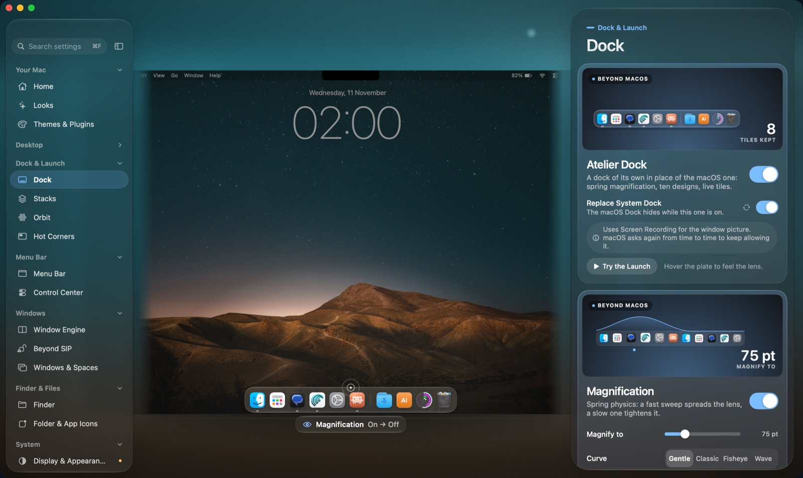

Dock & Launch
A dock of your own.
The Atelier Dock takes the place of Apple's, or gives Apple's new powers. Minimised windows fly into it, with a real Genie that follows your macOS setting.
- Ten designs and spring magnification: a fast sweep spreads the lens, a slow one tightens it.
- Gestures and Peek. Swipe up for an app's windows, down to minimise, pinch twice to quit.
- Dock Peek for Apple's Dock too, with no injection. SIP stays on.
- Orbit, Smart Stacks, and eight hot spots instead of four corners.
